Turn-based movement
Choose a square
Green markers show where you can move. Move onto an enemy-occupied square to start a duel.
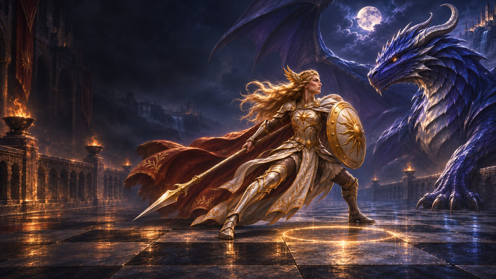
Turn-based strategy Real-time duels
Challenge a piece on the board, then fight for its square in a real-time duel.
Copper Bridge Key art
Gameplay
Attack an enemy piece to enter the arena. Control your fighter directly and duel for the contested square.
Turn-based movement
Green markers show where you can move. Move onto an enemy-occupied square to start a duel.

Turn-based movement
The 2D view shows the same turn. You can switch perspectives at any point in a match.
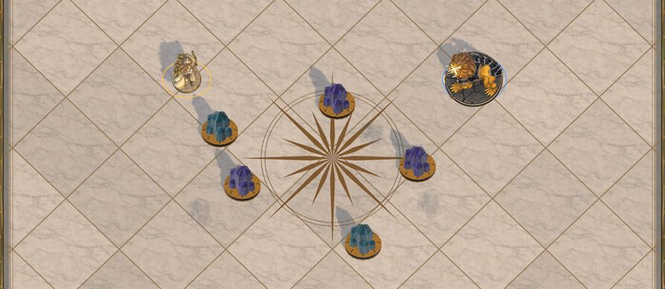
Real-time combat
Use crystals as cover and watch for your opponent's wind-up. The winner claims the square.
Light cycle
During a match, 31 squares change brightness. Light gains a bigger health bonus on bright squares, and Dark has the advantage on dim ones.
Dawn · Shifting squares grow brighter.
Eight Light pieces, eight Dark pieces and four summoned elementals.
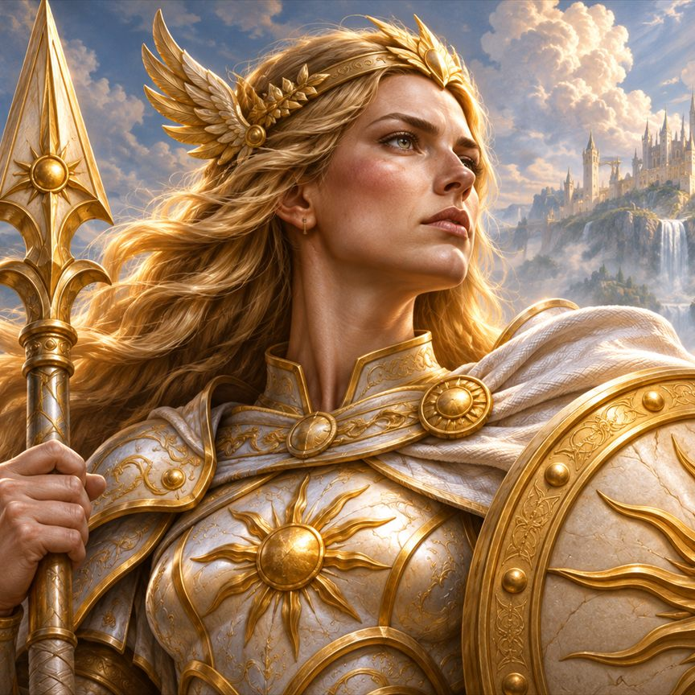
Light · Flying
Flies over other pieces on the board. In the arena, she hurls a golden spear to keep opponents at a distance.

Light · Ground
Strikes quickly with successive sword cuts. Use crystals as cover to close the distance.

Light · Ground
Fires silver arrows. With little health to spare, she relies on cover and distance in a duel.

Light · Teleportation
Teleports across the board and casts Light spells. Spent spells reduce his health in the arena.
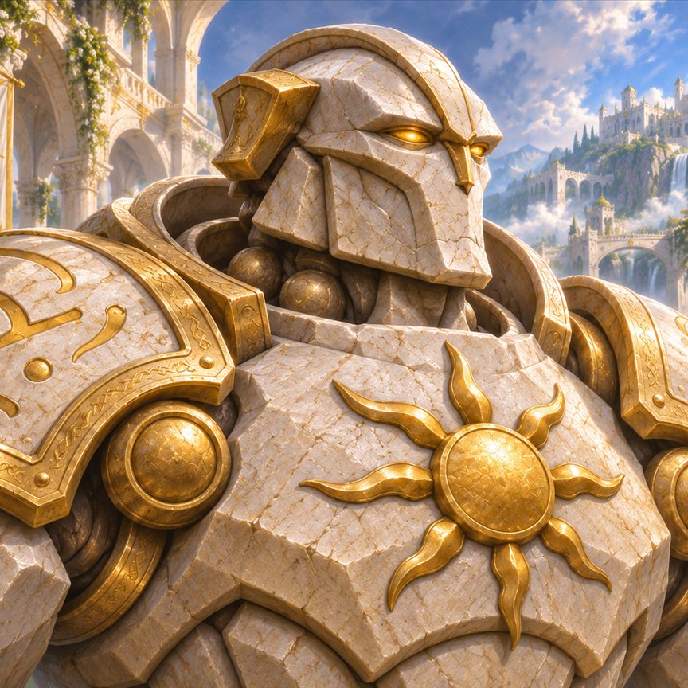
Light · Ground
Can take a beating and hurls heavy shards of stone. It takes time to ready each shot.

Light · Ground
Moves up to four squares on the board. In the arena, it fires a swift prism bolt down an open lane.

Light · Flying
Flies up to four squares. In a duel, it throws a spiral of wind and can withstand several hits.

Light · Flying
Stops to unleash a burst of fire around itself. It is immune to damage during the burst.

Dark · Teleportation
Wields Dark spells. She can heal a piece or teleport it to another square.
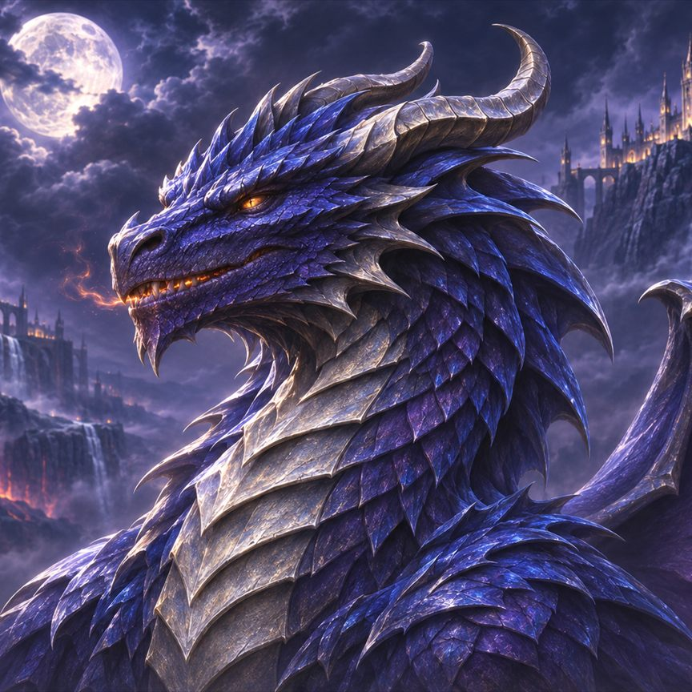
Dark · Flying
Flies over pieces on the board and breathes fire in the arena. Open space lets it make the most of its range.
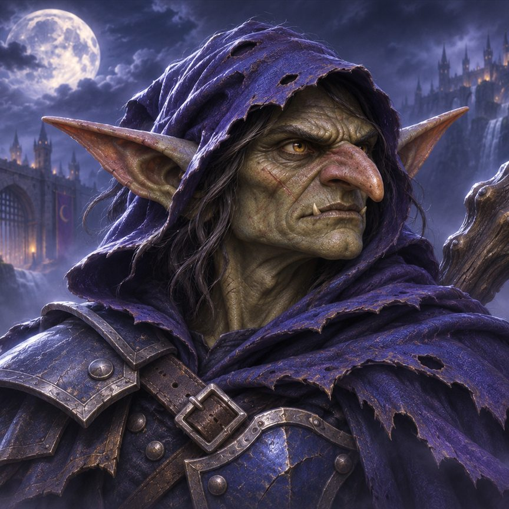
Dark · Ground
Looks for an opening to rush in, then lands a flurry of strikes with its jagged blade.
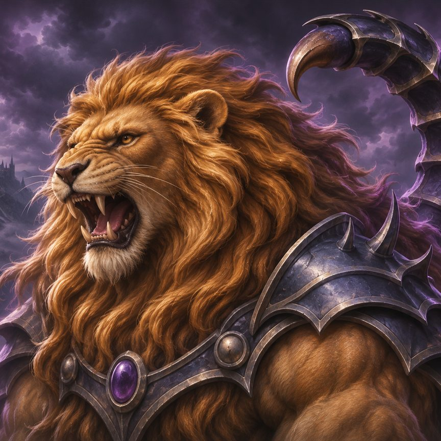
Dark · Ground
Fires its stinger at range. Between shots, it can reposition and take cover behind a crystal.

Dark · Flying
Its spectral wail damages nearby enemies. The Banshee stays in place while the attack lasts.
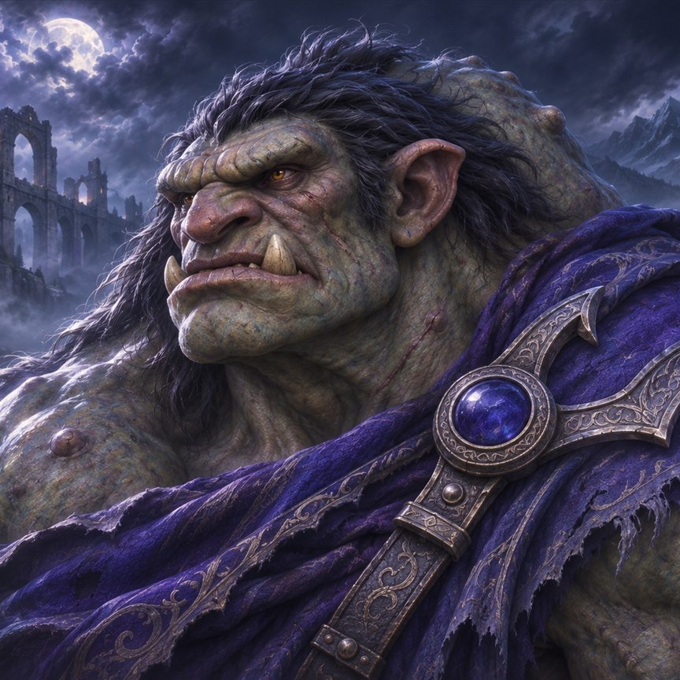
Dark · Ground
Takes several hits and hurls heavy granite shards. The Troll is most dangerous with a clear shot.
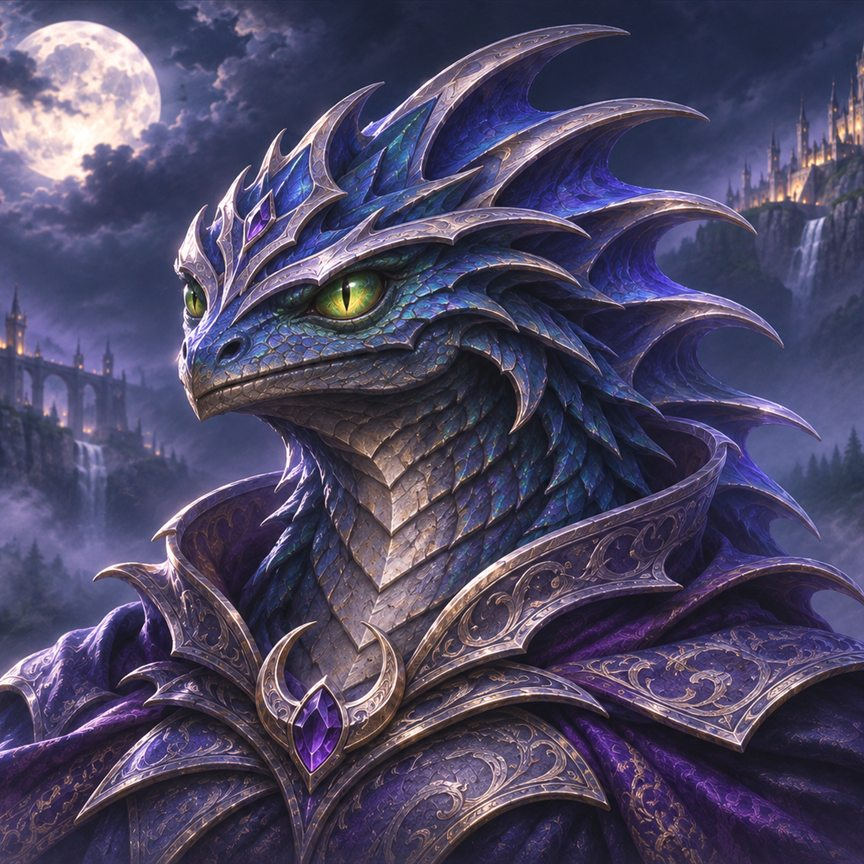
Dark · Ground
Fires a fast, venomous spike that is hard to dodge in the open. Solid crystals stop the shot.
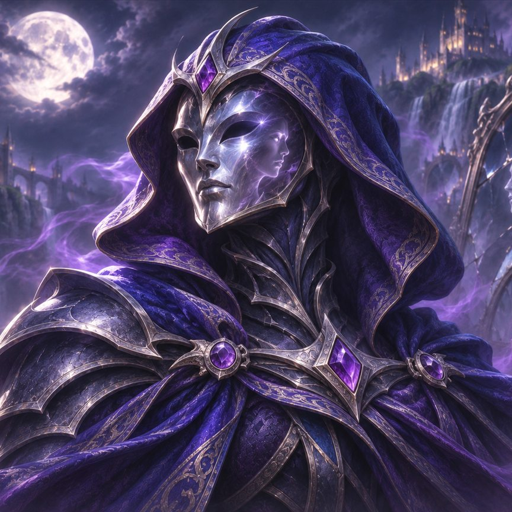
Dark · Flying
Copies its opponent's weapon and base health. A victory restores it to full health.
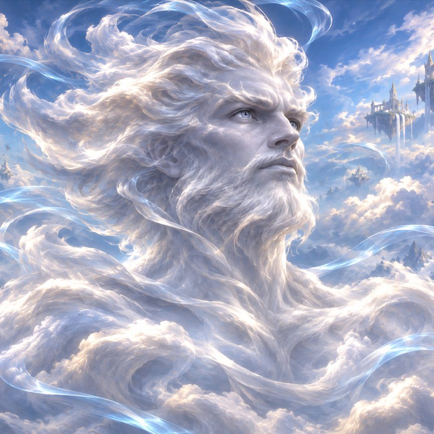
Summon · Air current
Sends a burst of wind and can attack again quickly. It vanishes after the duel it was summoned for.

Summon · Living flame
Hurls a fast, hard-hitting flame and has the shortest attack cooldown among the elementals.

Summon · Weight of earth
The hardiest of the summoned elementals. It hurls a heavy projectile with a long pause between shots.
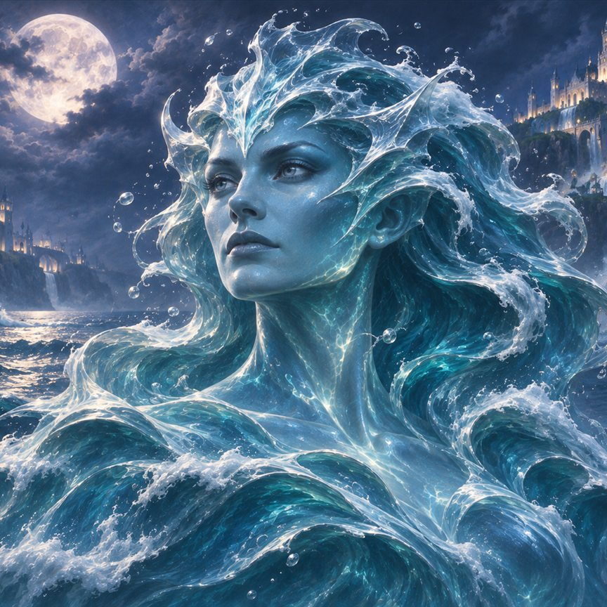
Summon · Tidal wave
Sends waves across the arena. Its high health lets it trade hits.
Three scenarios against the computer, each with a set starting position and a move limit.

Retake E5 within three of your turns and hold it for the next four turns across both sides. Light can cast Reverse Time once.
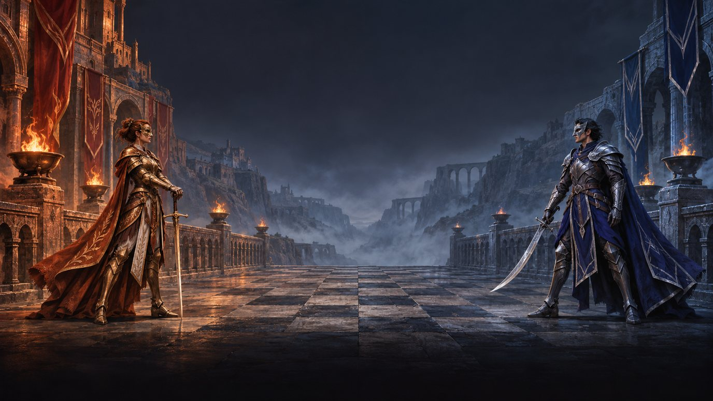
Occupy E1 and E9 at the same time within six Dark moves.
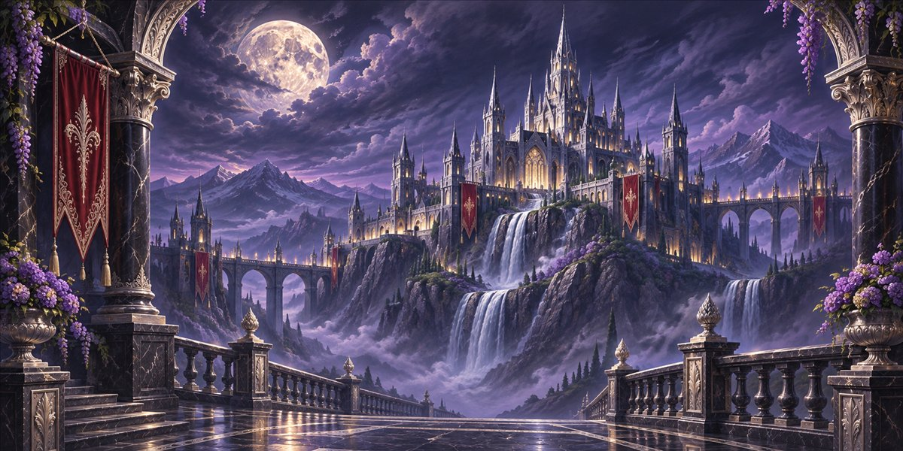
Get the wounded Sorceress to I5 within five moves. Dark can cast Heal once.
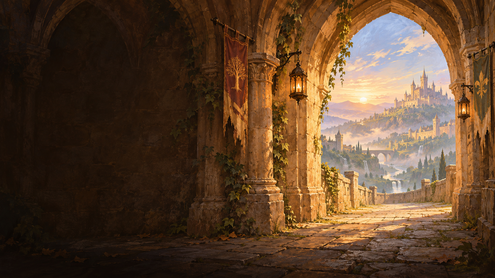
Open the gate in the full-screen installer. One file installs the complete game and adds it to your Start menu.
Download the Windows installerWindows 10 22H2 or Windows 11 (x64) · EXE · 914 MiB
Version 0.1.0-preview.1 · 2.16 GiB installed
SHA-256 checksum